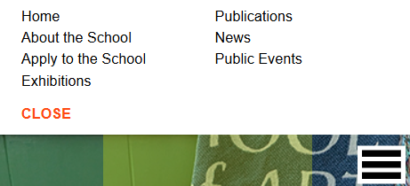
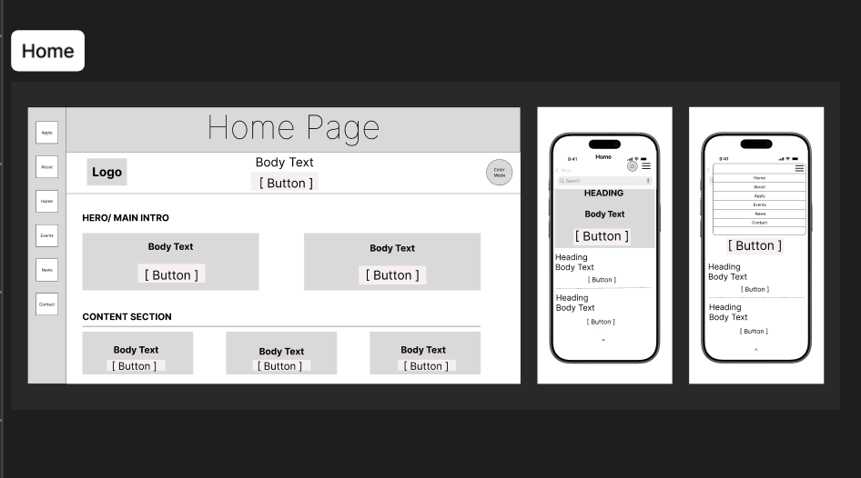
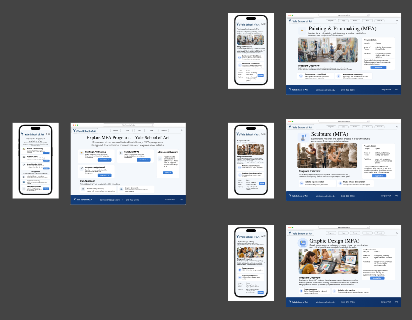
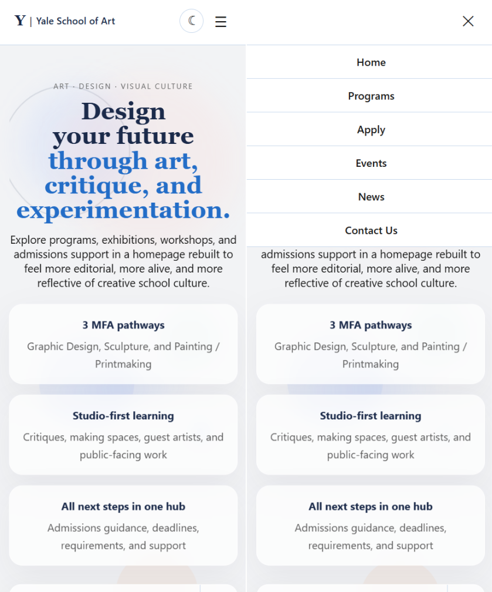
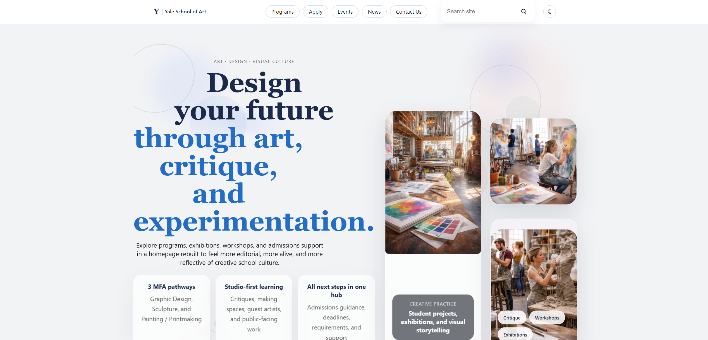
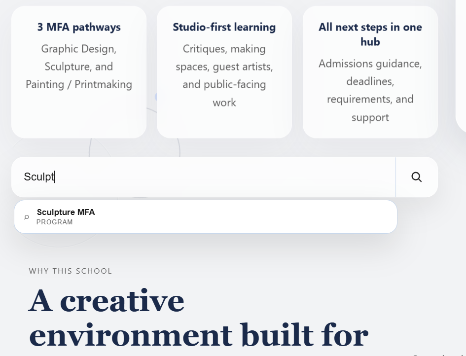
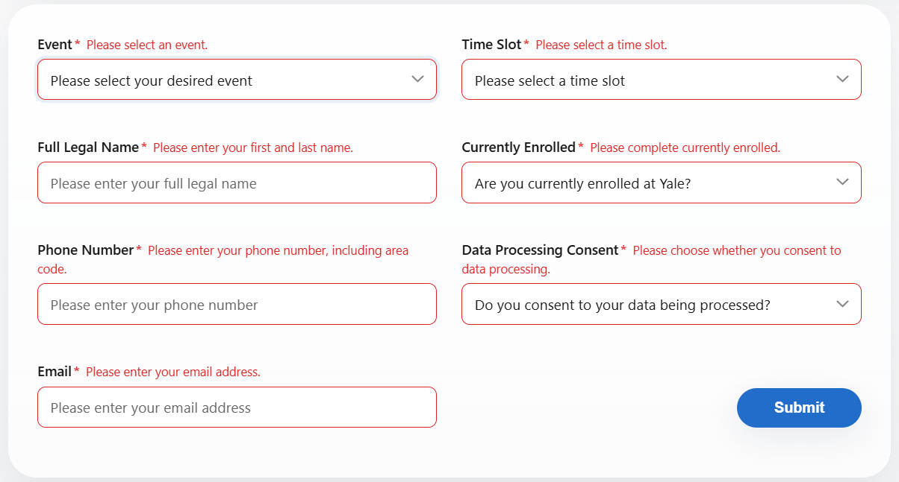
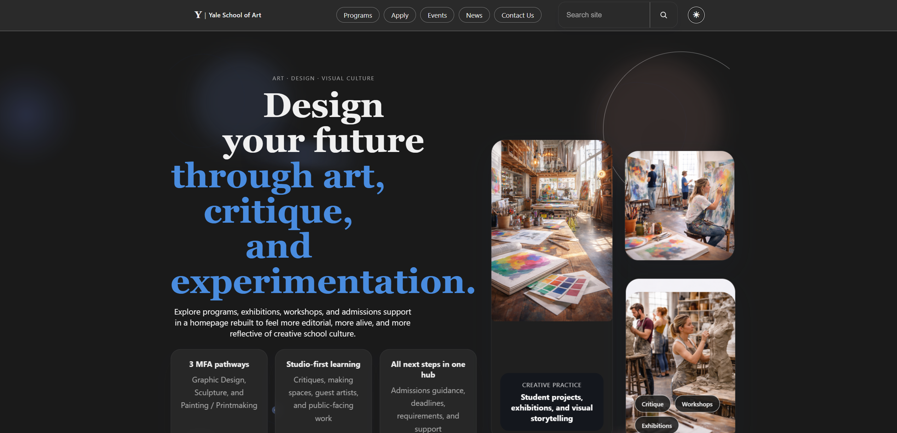

What was broken?
art.yale.edu is one of the most notoriously chaotic university websites. As a wiki-style site where any community member can edit content, it had accumulated layers of conflicting layouts, broken navigation, and accessibility failures that made basic tasks nearly impossible — especially on mobile. Our target users: prospective students, working artists, and faculty.

Core problem: Users struggled to complete basic tasks — applying to the school, finding events, or understanding program offerings — due to visual chaos, broken mobile navigation, and zero accessibility accommodations.
Heuristic Evaluation Findings
We evaluated the original site against Nielsen's 10 Usability Heuristics and identified 7 violations across the key screens. The most critical issues clustered around four failure areas:

Hamburger menu buttons were too small to tap reliably. There was no fully usable layout on phones — the site was effectively desktop-only.
Cluttered layout, zero whitespace, unreadable text, and no contrast. The homepage displayed competing content with no clear hierarchy or primary call-to-action.
No focus states, multiple WCAG AA failures, no dark mode support. The site was exclusionary by design.
No loading states anywhere. The application form used a pop-up for validation instead of inline error messages, causing repeated failed submissions.
Defining the direction
Drawing directly from the heuristic evaluation, we translated the violations into five specific design goals that guided every subsequent decision.
Establish a clean, consistent navigation structure with fewer top-level items — reducing cognitive load and making the menu predictable across all pages.
Build a fully responsive mobile layout with touch targets sized to WCAG minimum (44×44px), a reliable hamburger menu, and a layout that works without horizontal scrolling.
Implement a persistent, clearly labeled dark mode toggle in the top-right of every page that remembers the user's preference across the session.
Replace pop-up form validation with inline error and success states — appearing beside each field, in plain language, clearing automatically once the input is corrected.
Meet WCAG AA contrast ratios across both light and dark themes, add visible focus states on all interactive elements, and support keyboard navigation throughout.
Five stages, one semester
Every design decision was grounded in a prior stage. Nothing was skipped.
7 violations identified
Issues prioritized
Mobile + desktop
5 users tested
+ 5 desktop)
4 classmates tested
Dark mode, search, forms
3 real users tested
Deployed to GitHub Pages
Responsive & accessible
Paper first, pixels later
Before opening Figma, we sketched key screens on paper — home, programs, events, apply, and mobile layouts. Keeping it low-fidelity forced focus on structure and hierarchy rather than visual polish, and made it easy for participants to point out confusion without feeling like they were criticizing a finished design.
Peer Usability Testing — Round 1
We tested the paper sketches with 5 participants using a think-aloud protocol. Each participant received tasks without explanation, and we documented hesitations, wrong assumptions, and confusion out loud.
"I'm not sure where to go to apply — there are too many options and none of them say 'Apply' clearly."
Participant 2, Task 1 — Finding the ApplicationWhat Changed as a Result

Structure before style
Using the paper testing findings, we built 10 wireframes in Figma — 5 mobile and 5 desktop — in grayscale only. No color, no imagery, no branding. Every layout decision was tied to a documented usability finding.
Wireframe Testing — Round 2
We ran a second round of structured testing with 4 classmates using the think-aloud method. One member facilitated, one took notes, and one observed navigation patterns. Roles rotated between participants.
Key revision from wireframe testing: Early wireframes lacked signifiers — participants were unsure which elements were interactive. We learned that labels and affordances are critical even in grayscale: adding explicit button outlines, underlined links, and field borders dramatically reduced confusion in the next session.
Bringing it to life
With the wireframe structure validated, we built a fully interactive high-fidelity prototype in Figma — covering desktop and mobile layouts, three complete user flows, real-time search with dropdown suggestions, loading states, inline form validation, and a dark mode toggle. Moving to hi-fi required building out a full design system with variables, auto-layout, and component states.

Desktop and mobile variants with properly sized touch targets and device-appropriate navigation patterns
Search triggers live dropdown suggestions — simulated with Figma component variants and overlay interactions
Smart Animate transitions with timed delays between user action and result — no instant jumps
Inline error, success, and default states — no alert popups, no page reloads
Top-right persistent toggle — entire UI switches instantly, session preference remembered
Prototype User Testing — Round 3
We tested the prototype with 3 target-user participants. Each completed 5 core tasks while we observed navigation behavior, errors, and hesitation points. Follow-up questions surfaced what felt unclear and what worked.
Completed every task without prompting. Noted the layout was "easy to understand and very organized."
Found the toggle immediately in its new top-right position. Commented: "Dark mode is easy to find now — I like how it remembers my setting."
Completed the full application form in under 30 seconds. Described the page as "very simple to use."
Built, not mocked
With the prototype validated, we translated the design into working HTML, CSS, and JavaScript — deployed to GitHub Pages. The build followed a mobile-first approach, with styles written for 375px first then scaled up via media queries to 1280px desktop layout.
Responsive Layout


The hamburger menu on mobile and the full horizontal nav on desktop are real, working JavaScript interactions. The mobile hamburger opens and closes reliably — one of the specific pain points in the original site. We tested both layouts in Chrome DevTools before deployment.
Search & Micro-Interactions

Search suggestions filter in real time on every keystroke. Searching for "Sculpture" brings up instant dropdown suggestions. Clearing the input resets the view, and an empty-state message appears when nothing matches. Loading indicators appear during simulated async actions. Micro-animations throughout make the interface feel intentional and responsive.
Form Validation

The application form validates on input and on blur. Errors appear inline, directly beside the relevant field, in plain language explaining what to fix. They clear automatically once the input is corrected. No alert boxes, no full-page error states — exactly the opposite of the original site's pop-up validation.
Accessibility & Dark Mode

All text in both light and dark themes meets WCAG AA contrast
ratios. Typography uses rem units throughout. The dark
mode toggle is positioned top-right on every page, applies to every
component, and uses a designed dark palette — not a simple color
inversion. The session preference persists across page navigation.
Before & After
The redesign resolved all seven heuristic violations identified at the start. All three prototype testers completed every task successfully. The application flow averaged under 30 seconds end-to-end. The dark mode toggle was found immediately after being moved to the top-right, and search with autocomplete was described as intuitive by every participant. The deployed site passes WCAG AA contrast on both themes and scales cleanly from 375px to 1280px.
"Real user feedback at every stage was the difference between a design that looks good and one that actually works."
Key lesson — Group 4, ITIS 4390